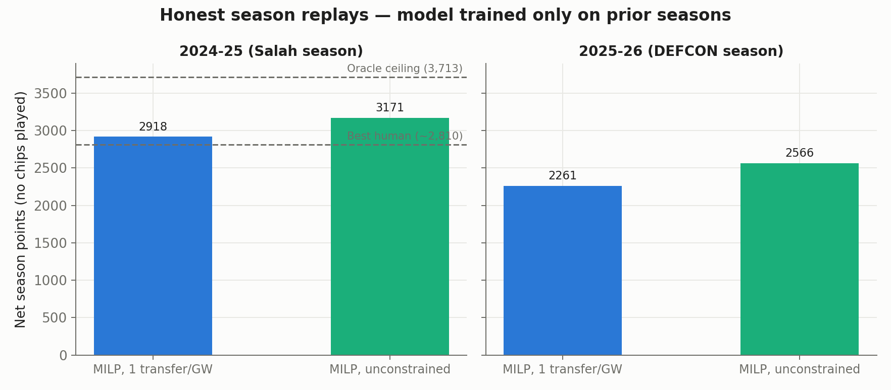
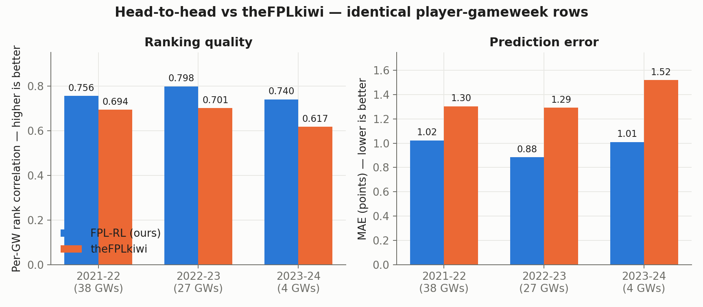
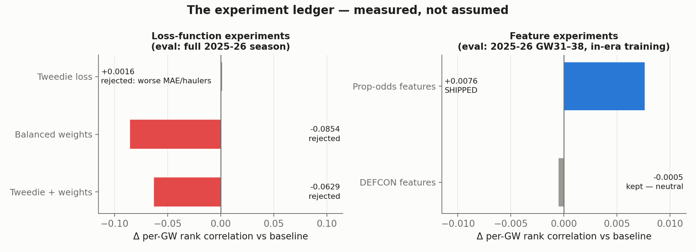

Work · live season · 6 min read
Fantasy Premier League, predict and optimise
A point predictor and a squad optimiser that plan a real Fantasy Premier League entry each week of the 2026/27 season. The tracker below refreshes itself from the game's public API, so this page is also the entry's scoreboard.
Season tracker
The models propose the transfers, lineup, captain and bench order each week, and the reviewed plan is what goes onto the entry. Any gameweek where the entry departs from the optimiser's recommendation is noted under the tracker.
Entry , season . Refreshed by a scheduled job that reads the public FPL API; no manual editing. The live data could not be loaded; the table below may be empty.
| Gameweek | Points | Average | Total | Overall rank | Transfers (hit) | Chip |
|---|
Departures from the optimiser's plan: GW2, the recommended transfer (João Pedro out, Gyökeres in) was not applied; the captain switch was. Later departures will be added here.
How it works
The system is predict-and-optimise. A LightGBM point predictor, one booster per position with 122 features, estimates each player's expected points for the coming gameweek from ten seasons of history: the community's season archives, Understat expected goals and assists, prior-season stats from FBref and FotMob, Pinnacle match odds, the game's own expected-points field, the new defensive-contribution counts, and since August the bookmakers' player-prop odds.
A mixed-integer programme (PuLP with the CBC solver) then chooses the squad, the transfers under the real bank, selling-price and free-transfer rules, the starting eleven, the captain and a bench order weighted by auto-substitution probabilities.
The project started as reinforcement learning, and the environment still exists (an 18-dimensional action space over five transfer pairs, lineup, captain and chip; a 1,363-dimensional observation; MaskablePPO on a 40-CPU cluster node). The RL agent has no validated result against the optimiser on held-out seasons, so it stays a research path (the repository's own rule is to retrain it only if it beats the optimiser on holdout) and the optimiser is what runs. I say this up front because the repository's name promises otherwise.
Backtests
Two chip-free season replays, each with the predictor trained only on earlier seasons. On 2024/25, using the April scripts and the 86-feature model of that time, the pipeline scores 2,918 net points with at most one transfer per gameweek (37 transfers, no hits) and 3,171 with up to five transfers per gameweek; a no-transfer squad scores 1,950 and a perfect-foresight oracle 3,713. For scale, the highest total a human manager has ever recorded is 2,844, in 2021/22 (Premier League), with chips.
On 2025/26, the first season under the new defensive-contribution scoring, a separate harness I wrote in August (it retrains its own evaluation model on the seasons before the target and replays the year through the optimiser and the full rules engine) scores 2,261 at one transfer per gameweek and 2,566 unconstrained (122 transfers, 336 points of hits), both below the all-time record and neither comparable with a real season played with chips. The two seasons did not go through one harness, so their levels are not directly comparable with each other either.

The gap between the two seasons is measured rather than guessed. The predictor's per-gameweek rank correlation with actual points is 0.75 to 0.79 on every expanding-window fold from 2021/22 to 2025/26, but its error on "haulers" (players scoring five or more) jumps from about 3.6 on the four earlier seasons to 5.84 on 2025/26, because the scoring regime changed; training inside the new era brings it back to 5.23. The remaining 2025/26 gap is, as far as I can tell, that the new scoring rewards a kind of player the historical features do not describe.
Against other predictors
The only clean external comparison scores both models on exactly the same player-gameweek rows: against theFPLkiwi's public projections, the predictor's per-gameweek rank correlation is 0.756 against 0.694 on 2021/22 (38 gameweeks, 19,603 rows) and 0.798 against 0.701 on 2022/23 (27 gameweeks), with lower error in three of the four outcome bins; theFPLkiwi is better on the three-to-four-point "tickers" bin in both seasons. Under the protocol published with OpenFPL (train through 2023/24, evaluate on 2024/25 gameweeks 32 to 38), the predictor's conditional error is lower than the numbers reported in that paper for OpenFPL and for a commercial service in three of four bins and higher in one; those competitor figures are quoted from arXiv 2508.09992, not re-run, so I treat it as indicative.

Experiments that did not make it
- Balanced sample weights, meant to help with haulers, cut the per-gameweek correlation from 0.747 to 0.662.
- A Tweedie loss improved rank correlation by 0.0016 and the zero and blank bins, but worsened overall error and the ticker and hauler bins, where the errors are largest; rejected.
- Defensive-contribution features were neutral (rank correlation moved by 0.0005 and error by 0.007 the other way, both within noise) and were kept.
- Head-to-head match odds added nothing.
- Player-prop odds were the one feature win of the summer: −2.5% error and a higher correlation in all eight held-out gameweeks, a small effect that survived the sign test.
- The expected-points "leak". An April report claimed the game's own expected-points field leaked post-match information; capturing the field mid-gameweek and reproducing its formula to 99.3% showed it does not, and it remains the most important feature.

Known gaps
- The optimiser is single-gameweek: no chip scheduling, no value on banking a free transfer, no fixture-swing planning. This is the largest missing piece.
- No expected-minutes model and no bonus-point model.
- The live entry is one season of one team. Treat the tracker as a diary, not a validation.